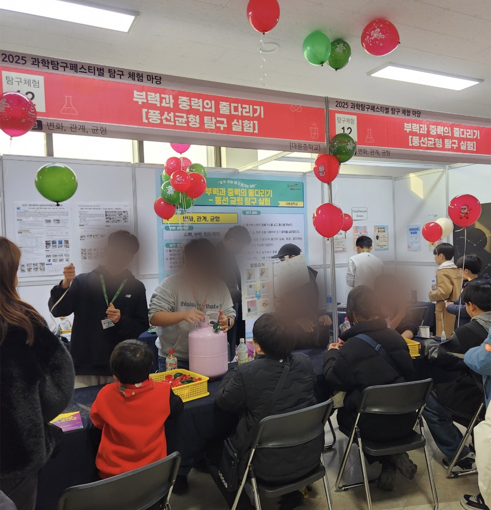
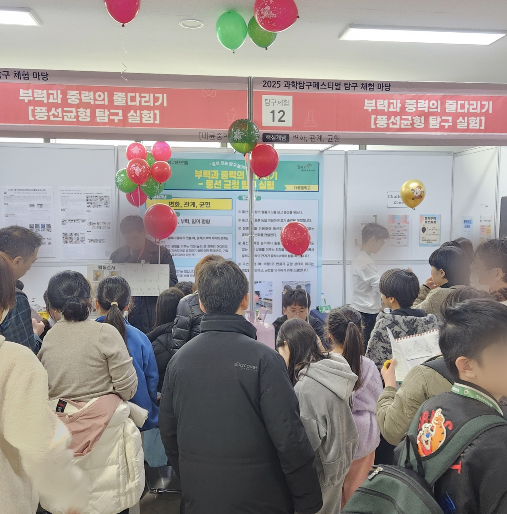

꿈
선수의 움직임과 신체 데이터를 분석해 부상을 미리 막는 일을 하고 싶습니다. 작은 자세 차이와 반복되는 충격을 AI로 분석해 위험 신호를 먼저 찾는 기술에 관심이 있습니다.
비전 · 성장 잠재력
관심 분야는 스포츠 의공학입니다. 아직 완성된 개발자가 아니라, 이 목표를 실제 기술로 바꾸는 법을 배우고 싶은 지원자입니다.
선수의 움직임과 신체 데이터를 분석해 부상을 미리 막는 일을 하고 싶습니다. 작은 자세 차이와 반복되는 충격을 AI로 분석해 위험 신호를 먼저 찾는 기술에 관심이 있습니다.
혼자 자료를 찾아보고 데이터를 분석해 보며 도전했지만, 실제 문제를 정의하고 결과를 검증하는 경험은 부족하다고 느꼈습니다. 루키캠프에서 아이디어를 기획하고 구현하는 과정을 끝까지 경험해 보고 싶습니다.
기획 · 문제 해결력
학생들의 만족도는 ‘메뉴 이름’이 아니라 ‘그 음식을 받는 순간의 상황’에서 갈립니다. 저는 이런 생활 맥락을 AI 학습 데이터로 보고 싶습니다.
같은 돈가스라도 뒷 순번 반은 식고 양이 줄어든 채 받습니다. 몇 번째로 배식받는지를 데이터로 보면, 메뉴가 아니라 ‘받을 때의 온도와 잔량’이 만족도를 좌우한다는 걸 잡아낼 수 있습니다.
행사나 단축수업으로 점심시간이 짧은 날엔 생선처럼 발라 먹는 메뉴가 그대로 남습니다. ‘먹는 데 걸리는 시간’과 ‘주어진 시간’의 차이를 보면 잔반과 불만의 진짜 원인을 찾을 수 있습니다.
인기 메뉴는 전날부터 기대가 부풀어, 평소 맛이어도 오히려 실망이 커집니다. 만족도는 절대적인 맛이 아니라 ‘기대 대비 결과’이기 때문에, 메뉴를 향한 기대치도 함께 봐야 합니다.
소통 · 리더십
중학교 1학년 겨울, 6~7명의 친구들과 중성부력을 설명하고 실험하는 과학 부스를 준비했습니다. 신청에 합격해 맡은 부스였기 때문에 더 책임감 있게 운영하고 싶었습니다.
상황
동선과 이벤트 방식에서 의견이 부딪힘
준비 시간이 부족했고, 부스 동선과 자리 배치, 이벤트 진행 방식이 계속 바뀌었습니다. 잘 운영하고 싶은 마음은 같았지만, 각자 생각한 방식이 달랐습니다.
내 역할
실험을 직접 기획·제작·시연·운영
저는 풍선 균형(부력과 중력) 실험을 직접 기획하고 준비물을 제작했으며, 부스에서 관람객에게 시연하고 운영까지 맡았습니다. 진행 방식이 엇갈릴 때는 각자 방법을 한 번씩 해 보고, 관람객이 더 쉽게 이해하는 쪽을 기준으로 정했습니다.
행동
설명과 준비물을 다시 정리
공식 설명이 길어지는 부분은 실험 순서를 먼저 보여 주고, 어려운 용어는 친구들과 쉬운 말로 바꿨습니다. 재료는 체크리스트로 나눠 빠진 것이 없게 확인했습니다.
배운 점
먼저 듣고, 함께 볼 기준을 만들기
당일에는 예상보다 많은 관람객이 왔지만, 서로 맡은 위치를 지키며 부스를 끝냈습니다. 협력은 내 의견을 세게 말하는 것이 아니라, 먼저 듣고 함께 볼 기준을 만드는 것이라고 느꼈습니다.


코딩 · 기술 역량
제 경험은 화려한 결과물보다 꾸준히 배우고 시도한 과정에 가깝습니다. 아래 내용은 지원서에 적은 실제 활동을 기준으로 정리했습니다.
스크래치·엔트리로 코딩을 시작해 파이썬으로 알고리즘(이진 탐색·스택)을 공부했습니다. vpython으로 밀도에 따른 부력·중력을 3D로 시각화하는 프로그램을 만들고, 아두이노로 피지컬 컴퓨팅도 다뤘습니다. 도구는 VS Code·PyCharm을 사용하며, 최근엔 파이썬으로 CNN을 직접 학습시켰습니다.
정보올림피아드 1차 대회 동상, 2차 대회 장려상 경험이 있습니다. 문제를 풀며 조건을 정확히 읽고, 예외 상황을 놓치지 않는 습관이 중요하다는 것을 배웠습니다.
PROJECT · 활동 결과물
MNIST 손글씨 데이터로 CNN을 직접 학습시키고, Epoch에 따라 Loss와 정확도가 어떻게 변하는지 관찰해 인터랙티브 리포트로 만들었습니다. 아래 그래프는 제가 실제로 측정한 데이터입니다.
Loss와 Accuracy 동시 비교 · Epoch 1 → 10
MNIST 손글씨 숫자를 CNN(합성곱 신경망, Conv 5층)으로 분류했습니다. 학습 데이터를 무작위로 회전·이동(Augmentation)해 과적합을 줄이고, Epoch마다 Loss와 테스트 정확도를 기록했습니다. 결과를 한눈에 볼 수 있도록 Chart.js로 인터랙티브 리포트 사이트까지 직접 만들었습니다.
실험 리포트 열기Epoch 1→10에서 Loss는 2.27→1.48로 줄고, 정확도는 31.7%→84.5%로 올랐습니다. 학습을 반복할수록 모델이 숫자를 더 잘 인식했습니다.
Epoch 1→3 단 두 번 만에 정확도가 31.7%→73.8%로 42%p 올랐습니다. CNN이 초반에 숫자의 기본 형태를 빠르게 학습한다는 뜻입니다.
Epoch 4는 Loss가 줄어도 정확도가 73.8%→56.9%로 하락, 5·7은 Loss가 다시 상승했습니다. 학습 샘플이 2,048개로 적고 Augmentation으로 데이터가 매번 달라져 생기는 진동입니다.
Epoch 8→10에 다시 안정되며 최고 84.5%를 기록했습니다. 단 무한정 늘리면 과적합으로 테스트 정확도가 떨어질 수 있어, 적절한 Epoch를 찾는 게 중요합니다.
활동 타임라인
수상 경력만 나열하지 않고, 어떤 과정에서 무엇을 배웠는지 함께 정리했습니다.
초3
스크래치로 코딩 시작
블록을 조합해 캐릭터가 움직이는 것을 보며, 내가 만든 규칙을 컴퓨터가 실행한다는 점에 흥미를 느꼈습니다.
초4
파이썬 기초와 알고리즘 학습
파이썬 문법, 이진 탐색, 스택 관련 내용을 배우며 문제를 단계별로 나누어 생각하는 법을 익혔습니다.
초5
정보올림피아드 수상
정보올림피아드 1차 대회 동상, 2차 대회 장려상을 받았습니다. 조건을 꼼꼼히 읽는 습관을 배웠습니다.
초6
SW 사고력 대회와 정보영재원
경북대 주최 SW 사고력 대회 동상, 경북대 주최 사고력 관련 대회 학과장상 경험이 있습니다. 교대 정보영재원에서도 활동했습니다.
중1
중성부력 과학 부스 기획
대구창의융합교육원에서 학교 소속으로 참가해 친구들과 과학 부스를 기획하고 운영했습니다. 협업과 설명 방식의 중요성을 배웠습니다.
중2
DGIST 정보영재원과 AI 관심 확장
AI 도구를 활용해 웹사이트를 만들어 보고, AI 관련 탐구 과정과 실험을 접하면서 스포츠 의공학 목표와 AI를 연결해 보고 싶어졌습니다.
EVIDENCE
지원서에서 말한 코딩, 문제 해결, 사고력, 영재교육 경험을 뒷받침하는 자료입니다. 각 이미지는 클릭하면 크게 확인할 수 있습니다.
스크래치 기반 코딩 기초 자격입니다. 코딩을 처음 체계적으로 익힌 기록입니다.
문제를 분석하고 코딩으로 해결하는 사고력 경험을 보여주는 수상입니다.
문제를 절차적으로 나누어 해결하는 컴퓨팅 사고력 수상입니다.
조건 분석과 구현 안정성을 쌓아 온 알고리즘 수상입니다.
알고리즘 문제 풀이를 꾸준히 준비한 기록입니다.
더 어려운 문제까지 이어서 도전한 심화 학습 기록입니다.
꾸준히 문제 해결 훈련을 이어간 기록입니다.
정규 수업 밖에서도 꾸준히 탐구하고 배우려는 태도의 증빙입니다.
팀과 함께 사고를 넓히고 해결 방향을 찾은 경험입니다.
WHY ROOKIE CAMP
루키캠프에서는 친구들과 의견을 나누고, 실패한 부분도 다시 고치며, AI 서비스를 실제로 만들어 보는 과정을 배우고 싶습니다. 지금의 목표는 스포츠 의공학이라는 꿈을 더 구체적인 기술 경험으로 연결하는 것입니다.
EVIDENCE DETAIL